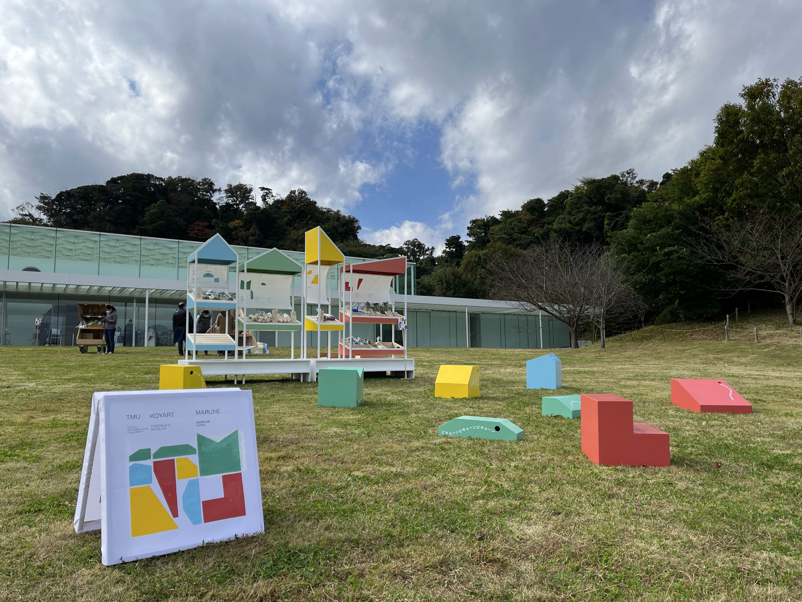
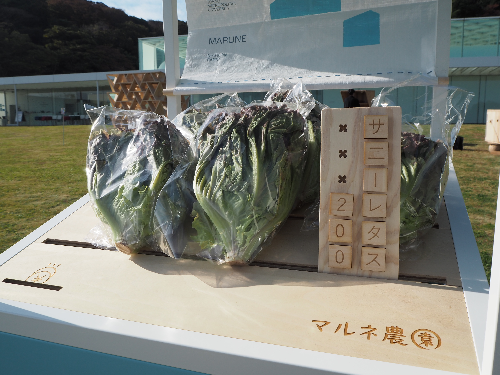
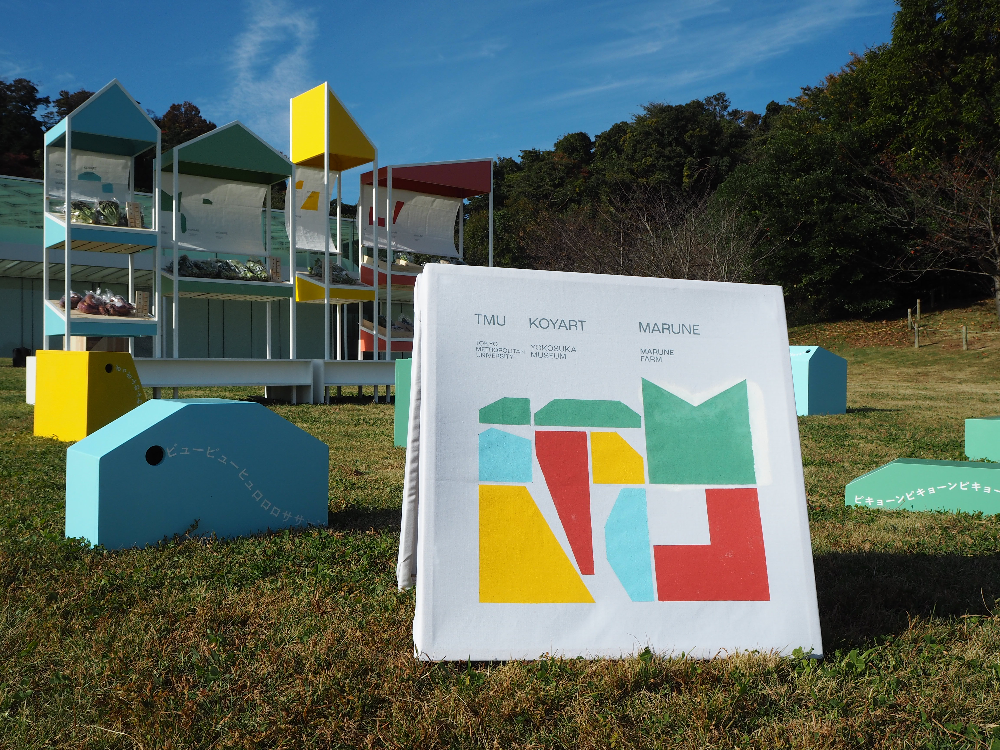
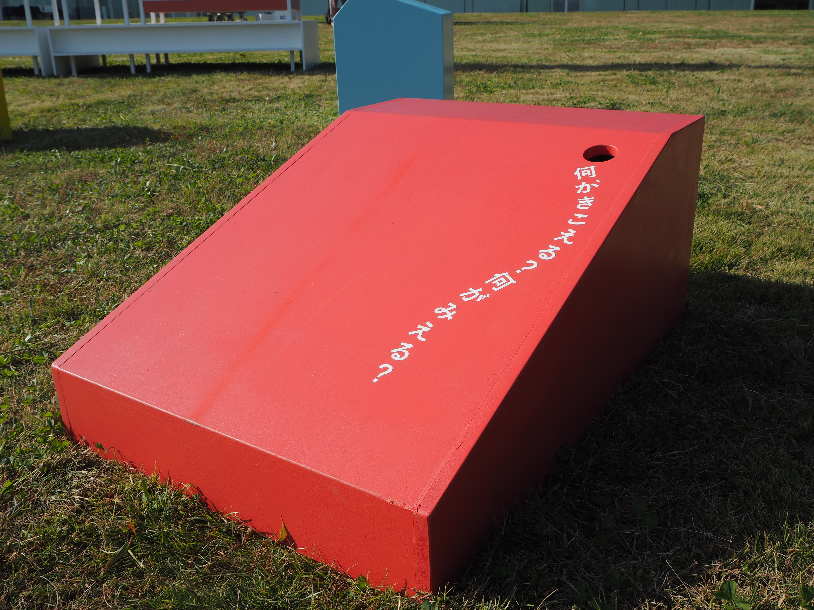
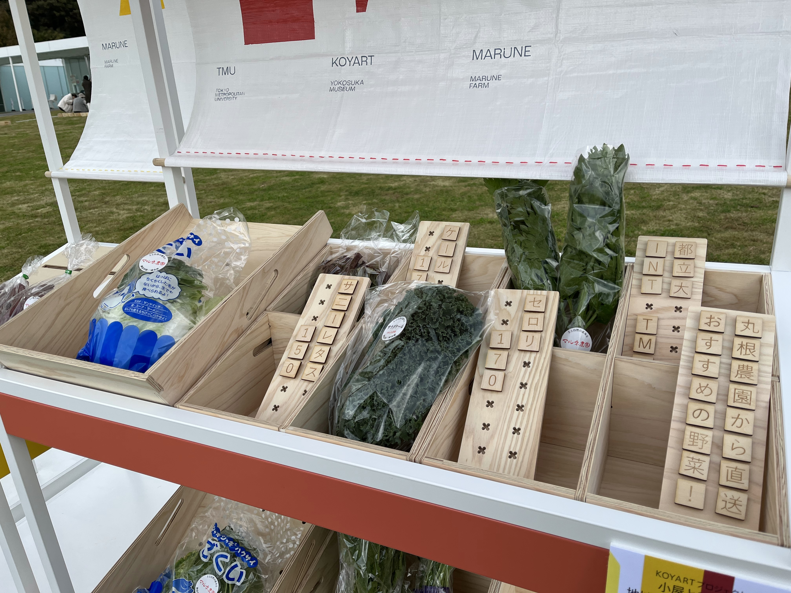
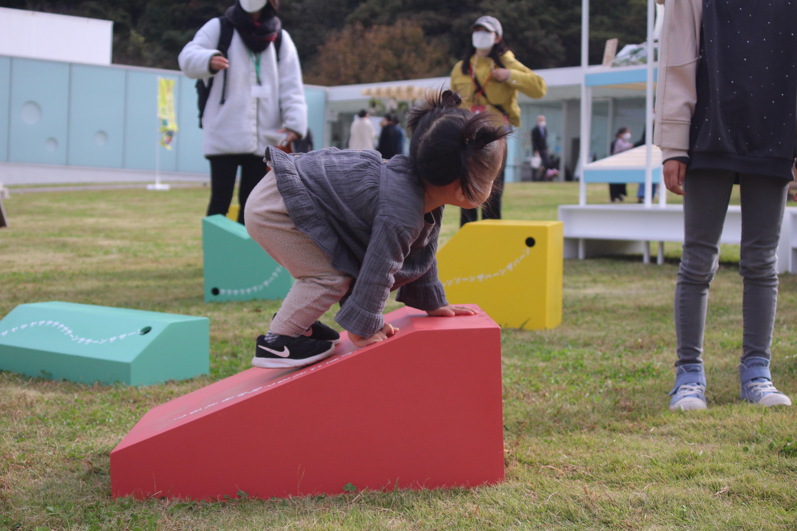
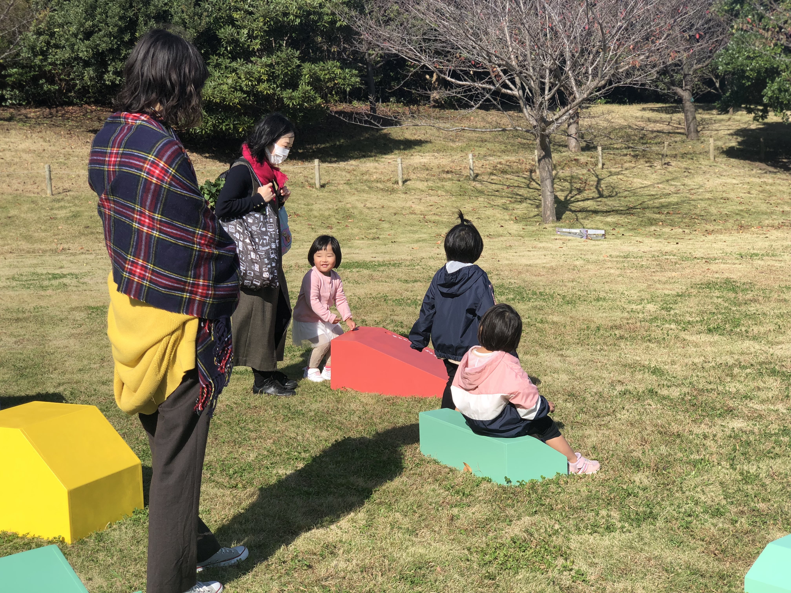

Koyart
2023
Member: 5
Design category: interior design
Role: engineering / concept design
Achievements: Exhibited at Yokosuka Museum of Art
A home-like vegetable stand and furniture that recites poetry.
In the project Koyart, I helped design a vegetable stand and the plaza in front of it. The five of us made small furniture with holes that produce sound and placed them in the plaza to shape the space. We designed furniture that fosters a “noticing” mind through a poetry-like rhythm—“knock, knock, knock”—that you hear when you peek into the holes. We created seating and conversation spots while using this rhythm so that passersby would naturally become curious about the unattended stand.
お家のような野菜販売所と詩を詠う家具
研究室で参加したプロジェクト Koyart にて、野菜の販売所とその前の広場をデザインしました。私たち同期 5 人は、穴から音のする小さな家具を制作、配置することで、広場をデザインしました。『コンコンコン...』詩を詠むようなリズムで音が聞こえてくる"気づく"心を養う家具をデザインしました。私たちは、穴の空いた小さな家具を複数制作し、広場に置きました。家具の穴を覗くと、中から叩く音が聞こえてきます。座って休んだり、おしゃべりできる場所を作ると共に、不思議なリズムによって、近くを通るだけで、自然と無人販売所に興味を持ってもらえるような広場を作りました。